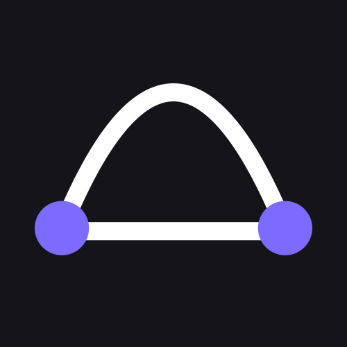

Focus on specific regions
with smooth transitions
Get crisp outputs
even at 100× zoom
Export at 4K 60fps
regardless of your native resolution

Dolly
Cinematic product demos in the browser.
And animation effects
on cue, anywhere on the page
bounceIn
flipInX
zoomIn
fadeInUp
rubberBand
tada
And JavaScript keyframes
run code mid-shot
// at 4.0s
document.getElementById('dialog')
.classList.add('is-open')
document.getElementById('dialog')
.classList.add('is-open')
Triggered by a JS keyframe